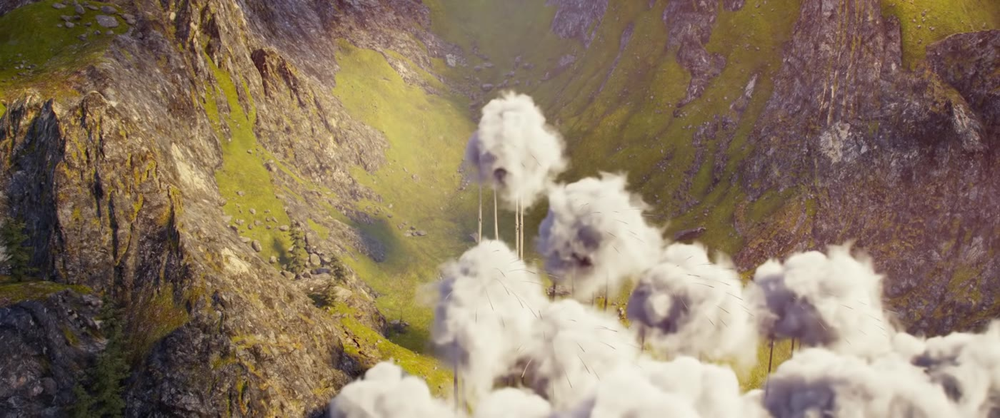
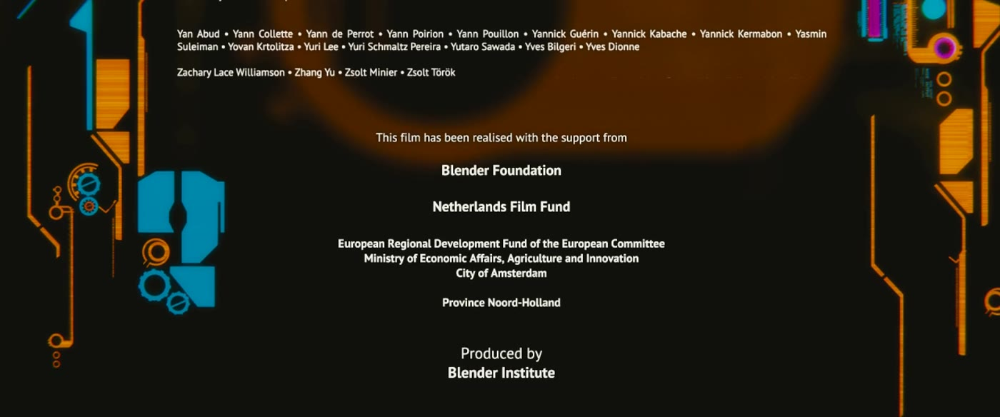
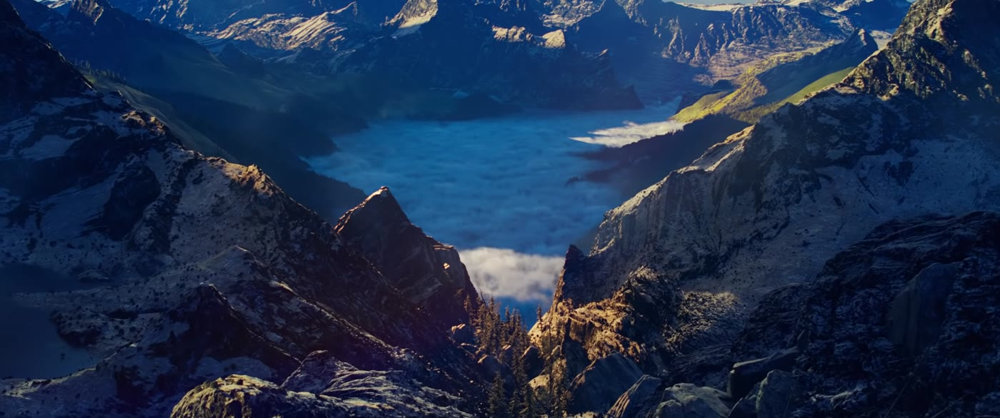

光线与色彩
光塑造立体感和氛围；颜色直接对情绪「说话」。AI 时代，这两样都要写进提示词。
光线
是什么
- 三点布光：主光（Key）塑形、辅光（Fill）补阴影、轮廓光/背光（Back）把人从背景「抠」出来——所有布光的起点。
- 高调 vs 低调：高调亮、阴影少（喜剧、广告）；低调暗部多、反差大（悬疑、黑色电影）。
- 硬光 vs 柔光：硬光阴影锋利、戏剧强；柔光过渡软、自然温柔。
- 方向：顺光平；侧光有立体；逆光有轮廓和氛围；顶光/底光易诡异。
- 色温：暖光约 3200K（钨丝灯感）；冷光约 5600K（日光感）。
- 黄金时刻 / 蓝调时刻：日出后或日落前约 1 小时偏暖；日落后天空深蓝。


影像例子
推荐拉片镜头
- 《寄生虫》（2019）：半地下室靠街面那一扇窗；朴社长家是整面玻璃的日光。
- 《奥本海默》（2023）三一试验：一场真实爆炸把人脸打进同一阵白光。诺兰说过试验场面用的是实拍爆炸，不是后期做的火球。
只写片名和场面。分钟数随修复版和网络拷贝变化，没有对某一份文件逐帧核对，所以不标时间点。
为什么重要
光不只是「看得见」，而是在写人住在哪一层。《寄生虫》（2019）的半地下室靠街面那一扇窗吃饭，朴社长家则是整面玻璃灌进来的日光。摄影指导洪庆彪和奉俊昊把这栋房子的光和楼梯当成同一套阶级设计。
怎么用
写提示词时写清方向 + 颜色，例如：「左侧冷蓝月光 + 右侧暖色烛光」。实拍时台灯就能练四种方向光。
练一练
一盏台灯，同一张脸：顺光、侧光、逆光、底光各拍一张，对比情绪。
色彩
是什么
颜色会说话，但含义看上下文：红≈激情/危险，蓝≈冷静/忧郁，绿≈自然/病态，黄≈温暖/焦虑……
- 互补色对比（如经典橙青）让人物从背景跳出来。
- 一部片/剧通常有统一色彩方案；有时每条故事线各有颜色。

影像例子
推荐拉片镜头
- 《爱乐之城》（2016）：黄、蓝、红把歌舞从日常里分离出来。
- 《绝命毒师》：玛丽长期穿紫，是剧组给定的人物颜色。
- 《奥本海默》（2023）：彩色一条线、黑白一条线。诺兰把彩色说成奥本海默的视角。
只写片名和场面。分钟数随修复版和网络拷贝变化，没有对某一份文件逐帧核对，所以不标时间点。
为什么重要
统一色调 = 作品「身份证」。AI 短片若每镜色调乱跳，观众会觉得不是同一部片。《爱乐之城》（2016）用黄、蓝、红把歌舞从洛杉矶的日常里分离出来。《绝命毒师》给人物长期固定颜色，玛丽的紫色是剧组定下的，不是某一集碰巧穿的。《奥本海默》（2023）把彩色和黑白分成两条线，诺兰把彩色说成奥本海默自己的视角。
怎么用
开拍或生成前先定 Mood board：3–5 张参考图钉死主色与风格词（如 desaturated teal-and-red）。
练一练
为你的短片选一对主辅色，写进分镜备注和提示词模板。
一句话记住：光写方向与软硬；色定方案后贯穿全片。